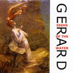

| Artist: | Gerard |
| Title: | Sighs Of The Water |
| Label: | Musea FGBG 4439.AR |
| Length(s): | 46 minutes |
| Year(s) of release: | 2002 |
| Month of review: | [08/2002] |
| 1) | Sighs Of The Water | 8.08 |
| 2) | From The Deep | 7.22 |
| 3) | Pain In The Bubble | 5.53 |
| 4) | Keep A Memory Green | 5.10 |
| 5) | Cry For The Moon | 4.45 |
| 6) | Aqua Dream Part One: Aqua Dream | 6.50 |
| 7) | Aqua Dream Part Two: Spring Tide (bonus) | 8.23 |
Gerard does not use vocals often, but this album seems to be a departure from that. From The Deep includes dramatic, vocoded vocals and I like them. The vocoding also makes the voice sound less Japanese. In between the music continues in rampant style, overpowering and battering your ears senseless. After a few minutes, though, the music takes gas back and a strong melancholic theme takes over. This is top notch symphonic rock. After livening up the music again, the final part of the track is crimsonesque (Court Of type Crimson that is) with mellotron and flute.
On Pain In The Bubble the band does not let off their highly bombastic sound, succeeding also in building a tense atmosphere with ever higher pitched keys and a strong bass underground. The rhythm section is in fact more easily compared to King Crimson and those other more scary bands in the progressive scene, than say ELP. The music gets to be a bit more up-beat later on and in fact it is hard keeping my hands still, even when I am not typing. Extremely tight musicianship here on this nightmare trip.
Yes even Gerard has them: Keep A Memory Green is a melodic ballad with melodic piano runs and washes of keyboards. The vocals are longing, full of pathos/drama and not always follow the original English or even American pronunciation. It does not disturb me though. Some imposing churh organ in here as well. The ending is slow moving, percussive.
Rowdy organ progressive is pounded out on Cry For The Moon. And what can I say. There are some classical influences and a vocalist who is out to scare the wits out of you. I wonder what native English speakers make of the intonation and phrasing of this guy, but disregarding that the aggression in his vocals is surprising, almost devastating. It seems Gerard is taking risks here, and I not only like that, but the results as well. The interlude is Arabic in style. The vocals return at the end for another dose of violence. And listen to that theme.
Aqua Dream Part One: Aqua Dream is a mellow track again with a genial theme. Later the music gets to be a bit "classical" with Art Of Noise like sounds, heavy drums and something akin to a string orchestra. The first time this album that Gerard starts to meander a bit, but not too long.
The final track is Aqua Dream Part Two: Spring Tide, which is a Msuea only bonus track. On this track, the band continues in the vein of the previous tracks, adding just that bit of tension to their high energy output. My fear is though now that the band also put a Japan only bonus track on the Japanese pressing which is bound to exist.